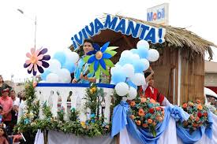

Manta, una ciudad costera del Ecuador, conserva
tradiciones vivas que reflejan su identidad manabita.
Entre sus costumbres más destacadas están las festividades religiosas
como las celebraciones de San Pedro y San Pablo, con procesiones
marítimas y actividades culturales. La gastronomía es esencial,
con platos típicos como el viche, el encebollado y los ceviches.
También es común la pesca artesanal como forma de vida tradicional.
El uso del sombrero de paja toquilla, elaborado en la región, forma parte del
patrimonio cultural. La música montubia y los bailes populares
acompañan muchas celebraciones.
Una de sus fechas festivas son el 19 de octubre es el Festival Bailable
del Comercio de Manta - Cámara de Comercio Manta. Las Fiestas del
Comercio de Manta 2024, con su arraigada tradición, se preparan
para ofrecer un despliegue vibrante de cultura, música y oportunidades.
Las costumbres de Manta, Ecuador, reflejan tanto su rica
herencia cultural como su fuerte conexión con el mar y el
comercio.La ciudad celebra festivales como el de Teatro y el de la
Danza, y honra a sus santos patronos, San Pedro y San Pablo,
con procesiones y bendiciones marítimas.